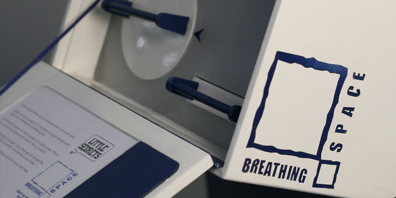

LittleSecrets is a communication tool for those seeking help in their lives. With life becoming more stressful, we simply need somewhere to express our thoughts and feelings.
Located in public places, Little Secrets encourages people to write down what is on their mind. Once placed in the drawer and locked in place, an image is taken and uploaded to the support groups Twitpic account. There, helpers can offer advice through the comments below the image. People can then choose what their next step will be.
The service is completely anonymous and only the user will know which card is theirs.